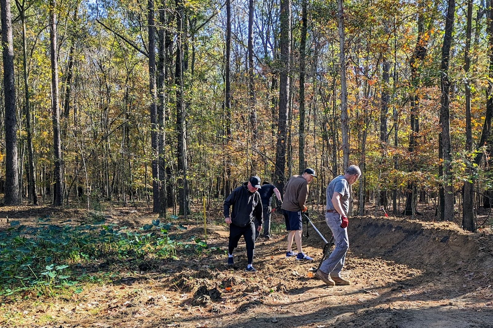
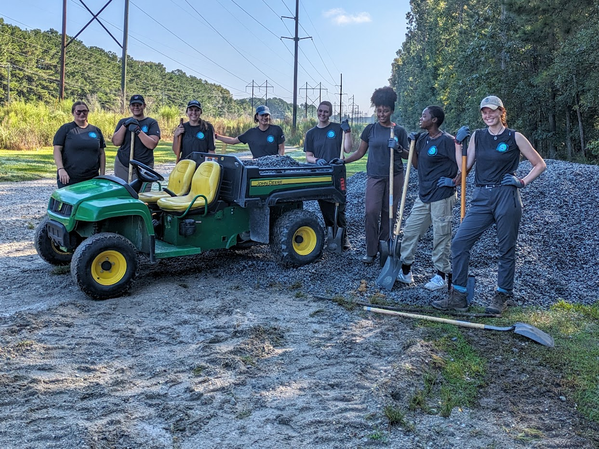
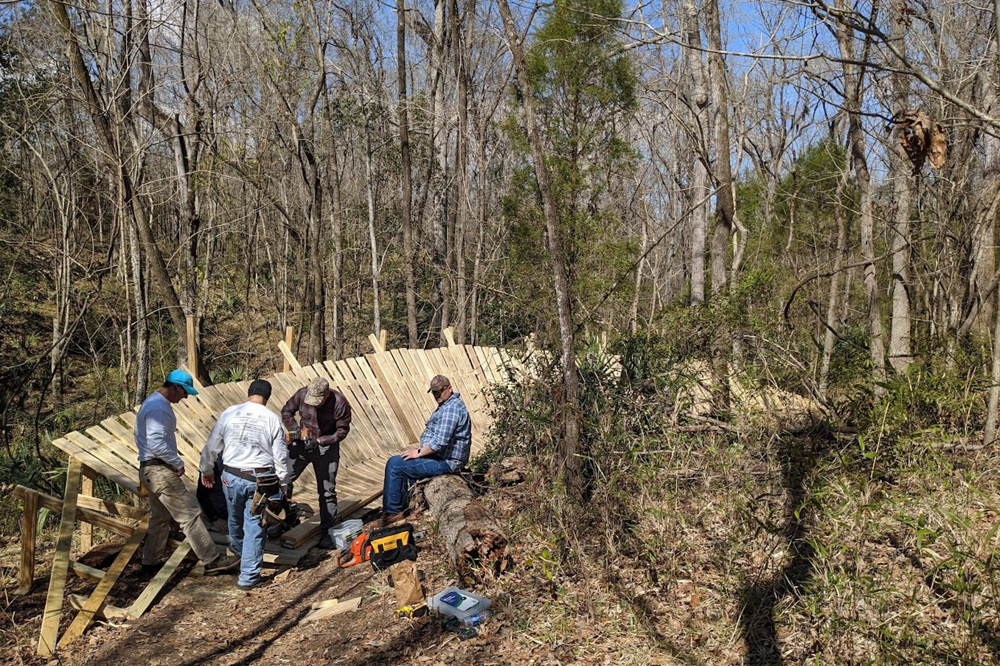

Supporting trail access, stewardship, and off-road cycling across the South Carolina Trident region.
Get InvolvedTrident Off-Road Cycling Collective is a nonprofit organization dedicated to building, maintaining, and protecting sustainable natural-surface trails while promoting responsible off-road cycling and outdoor recreation.
Designing and constructing sustainable trails that serve riders, land managers, and the environment.
Organizing volunteer days to keep existing trails safe, fun, and environmentally sound.
Working with local parks, municipalities, and landowners across Berkeley, Charleston, and Dorchester counties.
Whether you ride, hike, or just love the outdoors, volunteers are the backbone of TORCC. No experience required—just a willingness to help.

Bring gloves, water, and a good attitude. We’ll provide direction, tools, and a crew to work with.

Trail building is hands-on, social, and satisfying—leave the woods better than you found them.

From hand tools to lumber—help create durable features that keep trails fun and sustainable.
Support TORCC by helping fund trail projects, tools, materials, and stewardship. Your contributions make trail work, maintenance, and outreach possible.
Latest trail conditions are loaded live from the Zeroglitch trail status feed when available.
Please wait while we retrieve the latest updates.